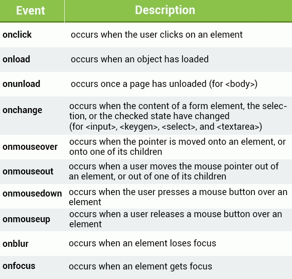

DOM
El modelo de objeto de documento (DOM) es una interfaz de programación para los documentos HTML y XML.
Facilita una representación estructurada del documento y define de qué manera los programas pueden acceder,
al fin de modificar, tanto su estructura, estilo y contenido. El DOM da una representación del documento
como un grupo de nodos y objetos estructurados que tienen propiedades y métodos. Esencialmente, conecta las
páginas web a scripts o lenguajes de programación.
Nodo
Es cualquier etiqueta del cuerpo, como un párrafo, el mismo body o incluso las etiquetas de una lista.
Document
El nodo document es el nodo raiz, a partir del cual derivan el resto de nodos.
Element
Nodos definidos por etiquetas html
Text
Es el texto adentro de un nodo element se considera un nuevo nodo hijo
de tipo text.
Attribute
Los atributos de las etiquetas definen nodos. (En js no serán vistos como tales sino como
información asociada al nodo tipo element).
Comentarios & otros
Los comentarios y otros elementos como las declaraciones doctype en la cabecera generan también
generan nodos.
Valores
-
ELEMENT_NODE value:1
-
ATTRIBUTE_NODE value:2
NO USADO
-
TEXT_NODE value:3
-
CDATA_SECTION_NODE value:4
NO USADO
-
ENTITY_REFERENCE_NODE value:5
NO USADO
-
ENTITY_NODE value:6
NO USADO
-
PROCESSING_INSTRUCTION_NODE value: 7
-
COMMENT_NODE value:8
-
DOCUMENT_NODE value:9
-
DOCUMENT_TYPE_NODE value:10
-
DOCUMENT_FRAGMENT_NODE value:11
-
NOTATION_NODE value:12
NO USADO
getElementByID()
Selecciona un elemento por ID.
EJ:
let par = document.getElementById('parrafo');
document.write(par)
OUTPUT EJ:
[object HTMLParagraphElement]
getElementsByClassName()
Selecciona todos los elementos que contengan la clase especificada. Devuelve una collecion
similar a un array, htmlCollection.
EJ:
let par = document.getElementByClassName('parrafo');
document.write(par[0]);
OUTPUT:
[object HTMLParagraphElement]
Nota: Si el indice no fuera determinado, devolvería [object HTMLCollection]
getElementsByTagName()
Selecciona todos los elementos que coincidan con la etiqueta especificada.Devuelve una collecion
similar a un array, htmlCollection.
EJ:
let par = document.getElementByTagName('p');
document.write(par[0]);
OUTPUT:
[object HTMLParagraphElement]
Nota: Si el indice no fuera determinado, devolvería [object HTMLCollection]
querySelector
Devuelve el primer elemento que se corresponda con el grupo especificado de selectores
EJ:
let par = document.querySelector('.parrafo');
document.write(par)
OUTPUT:
[object HTMLParagraphElement]
EJ2:
let par = document.querySelector('#parrafo');
document.write(par)
OUTPUT:
[object HTMLParagraphElement]
querySelectorAll
Devuelve todos los elementos que coincidan con el grupo especificados de selectores.
Devuelve una collecion similar a un array, NodeList.
EJ:
let par = document.querySelectorAll('.parrafo');
document.write(par[0]);
Nota: Si el indice no fuera determinado, devolvería [object NodeList]
Elemento no encontrado
Si el elemento que quiero capturar dentro de una variable no existe devolvera null
setAttribute()
Modifica el valor de un atributo.
Establece el valor de un atributo en el elemento indicado. Si el atributo ya existe, el valor es actualizado, en caso contrario,
el nuevo atributo es añadido con el nombre y valor indicado.
EL primer parámetro es el nombre del atributo y el segundo es el valor al que va a cambiar.
Puedo establecer atributos y valores que no se correspondan con ninguna propiedad css y aún así se agregaran.
Ej:
let inputNumber = document.querySelector('#inputNumber');
inputNumber.setAttribute('type','text');
Nota: Ahora el elemento input de id "inputNumber" es de tipo text.
getAttribute()
getAttribute() devuelve el valor del atributo especificado en el elemento. Si el atributo especificado no existe,
el valor retornado puede ser tanto null como "" (una cadena vacía).
Lo obtenido siempre será el valor del atributo especificado.
INPUT:
let inputNumber = document.querySelector('#inputNumber');
let atributoInputNumber = inputNumber.getAttribute('type');
console.log(atributoInputNumber);
OUTPUT:
'range'
removeAttribute()
removeAttribute elimina un atributo del elemento especificado.
let inputNumber = document.querySelector('#inputNumber');
inputNumber.removeAttribute('type');
NOTA: Ahora la propiedad del input con su valor a sido removida.
Nota sobre los metodos globales
A diferencia de los demás metodos mencionados, los metodos globales deben ser igualados a un valor para ser modificados.
Es por eso que no tienen parentesis ni reciben un argumento de función. Además todos los mencionados pueden ser establecidos
como atributos html.
.class
Lista de clases de un elemento separadas por espacios. Si se desean introcir clases se
deberá usar getAttribute('class','nombreDeLaClase'); no funciona de otra forma.
.contentEditable
Es una propiedades que puede ser establecida en un elemento. Si es false, el elemento
no puede ser modificado por el usuario, si es true, si puede serlo. Si el atributo no existe es creado, debe ser igualado
a un valor booleano para modificarse. Si no es igualado, devolvera un string con el valor que tenga (true o false);
Ej:
let parrafo = document.querySelector('#parrafo');
parrafo.contentEditable = true;
.dir
Indica la direccion del texto. Recibe dos valores string: rtl y ltr.
Ej:
let parrafo = document.querySelector('#parrafo');
parrafo.dir = 'rtl';
.hidden
Indica si un elemento, es o no, relevante. No recibe valor. Oculta el elemento. No importa el valor que reciba, con solo
introducir la propiedad desaparecera el elemento. Aún así en js, deberá recibir un valor diferente de false para ser
establecida.
Ej:
let parrafo = document.querySelector('#parrafo');
parrafo.hidden = true;
.id
Define un identificador único.
Ej:
let parrafo = document.querySelector('.par');
parrafo.id = 'par';
.tabIndex
Indica si un elemento puede seleccionar o no.
El atributo global tabindex indica si su elemento puede ser enfocado, y si participa en la navegación secuencial del
teclado (usualmente con la tecla Tab, de ahí el nombre). Acepta un entero como valor, con diferentes resultados que
dependen de dicho valor. Debependiendo del numero que tengan harán un reccorido con la tecla tab.
Un valor negativo (usualmente tabindex="-1") significa que el elemento debe ser enfocado, pero no debe de ser accesible a
través de la navegación secuencial del teclado. Es útil para crear widgets accesibles con JavaScript.
tabindex="0" significa que el elemento debe ser enfocado y ser accesible a través de la navegación secuencial del teclado,
pero su orden relativo es definido por convención de la plataforma.
un valor positivo significa que debe poder recoger el foco y alcanzable a través de la navegación secuencial del
teclado; su orden relativo es definido por el valor del atributo: la secuencia sigue el aumento del número de tabindex.
Si varios elementos comparten el mismo tabindex, su orden relativo sigue la posición relativa en el documento.
Un elemento con valor 0, un valor inválido o sin valor de tabindex, debe de ser posicionado después de elementos con un tabindex
postivo en el orden de navegación secuencial del teclado.
Ej:
let parrafo = document.querySelector('#parrafo');
parrafo.tabindex = 1;
.title
Contiene un texto con la información relacionada al texto que pertenece. En html muestra la informacion cuando el mouse
es superpuesto.
Ej:
let parrafo = document.querySelector('#parrafo');
parrafo.title = 'Texto';
.style
Contiene las declaraciones de estilo css para ser aplicadas a un elemento. Luego de style va un punto seguido de la propiedad
a ser modificada.
.className
.className obtiene y establece el valor del atributo class del elemento especificado. Asignar "className" puede ser conveniente
para los casos en los que está seguro de que no se usarán otras clases en el elemento. Cuando se usa className la clase
asignada será la única establecida.
INPUT:
let par = document.querySelector('.par')
par.className = 'parrafo';
console.log(par.className);
OUTPUT:
parrafo
.value
.value obtiene y establece el valor del atributo value del input especificado.
INPUT:
let input = document.querySelector('.inputText')
input.value = 555;
console.log(input.value);
OUTPUT:
555
.type
.type obtiene y establece el valor del atributo type del input especificado.
INPUT:
let input = document.querySelector('.inputText')
input.type = number;
console.log(input.number);
OUTPUT:
number
.accept
Se usa para determina los archivos que aceptara un input de tipo file.
EJ:
let input = document.querySelector('.inputFile')
input.accept = 'image/png';
Se usa para asociar los inputs que están por fuera del formularios, el valor que deberán recibir debe ser igual al id
del formulario. En html el atributo es form="idFormulario".
Ej:
let inputSubmit = document.querySelector('#submitForm');
inputSubmit.form = 'formContact';
.minLength
Se usa para determinar el minimo de caracteres necesario para enviar un formulario, si no tiene el minimo necesario no lo
enviara.
Ej:
let inputText = document.querySelector('#textInput');
inputText.minLength = 7;
.placeholder
Se usa para escribir un texto de referencia dentro de los inputs que admiten texto.
Ej:
let inputText = document.querySelector('#textInput');
inputText.placeholer = 'Escriba su texto aquí';
.required
Determina que el input será requerido para enviar el formulario. Puedo establecer cualquier cosa como valor excepto false.
Ej:
let inputText = document.querySelector('#textInput');
inputText.required = true;
Más de .style
Modifica el estilo del elemento. La sintaxis es la siguiente: element.style.propiedadAModificar = 'valor';
Si hay una propiedad formada por dos palabras como background-color se remueve el guion y se introduce el estilo
camelCase.
Ej:
let par = document.querySelector('.par');
par.style.backgroundColor = 'black';
par.style.color = 'red';
classList
La propiedad de sólo lectura Element.classList devuelve una colección activa de DOMTokenList de los atributos de clase del
elemento.
Usar classList es una forma práctica de acceder a la lista de clases de un elemento como una cadena de texto delimitada por
espacios a través de element.className.
.classList tiene muchos metodos que pueden ser usados.
INPUT:
let par = document.querySelector('.par');
console.log(par.classList);
OUTPUT:
DOMTokenList(2) ['par', 'par2', value: 'par par2']
.add()
Añade una clase
INPUT:
let par = document.querySelector('.par');
par.classList.add('par3');
console.log(classList);
OUTPUT:
DOMTokenList(3) ['par', 'par2', 'par3', value: 'par par2 par3']
.remove()
Remueve una clase
INPUT:
let par = document.querySelector('.par');
par.classList.remove('par2')
console.log(par.classList);
OUTPUT:
DOMTokenList ['par', value: 'par']
.item()
Devuelve el índice de la clase.
INPUT:
let par = document.querySelector('.par');
console.log(par.classList.item(0));
OUTPUT:
par
.contains()
Recibe por argumento el nombre de una clase que quieran consultar, si la clase existe dentro del elemento devolverá true,
en caso contrario false.
INPUT:
let par = document.querySelector('.par');
console.log(par.classList.contains('par'));
OUTPUT:
true
.replace()
Reemplaza una clase existente por una nueva. Recibe dos parámetros el primero, es la clase que deseo reemplazar, y la segunda
la nueva.
INPUT:
let par = document.querySelector('.par');
par.classList.replace('par', 'par1');
console.log(par.classList);
OUTPUT:
DOMTokenList(2) ['par1', 'par2', value: 'par1 par2']
.toggle()
Cuando sólo hay un argumento presente: Alterna el valor de la clase; ej., si la clase existe la elimina
y devuelve false, si no, la añade y devuelve true.
Cuando el segundo argumento está presente: Si el segundo argumento se evalúa como true, se añade la clase
indicada, y si se evalúa como false, la elimina.
Es decir, si existe la clase, la elimina y si no existe la agrega. Si en el segundo parámetro insertamos true
dejará la clase aunque exista, si insertamos false la sacará siempre aunque no esté.
INPUT:
let par = document.querySelector('.par');
par.classList.toggle('par', true);
console.log(par.classList);
OUTPUT:
DOMTokenList(2) ['par1', 'par2', value: 'par1 par2']
.textContent
Devuelve el texto de cualquier nodo y permite modificarlo. No devuelve el html que contengan. Muestra también el texto oculto.
Standard.
INPUT:
let par = document.querySelector('.par');
par.textContent = 'HOLA MUNDO';
console.log(par.textContent);
OUTPUT:
HOLA MUNDO
.innerText
innerText a diferencia de textContent no analizan los elementos ocultos ni todos los elementos. NO SE USA(OBSOLETO)
INPUT:
let par = document.querySelector('.par');
par.innerText = 'HOLA MUNDO'
console.log(par.innerText);
OUTPUT:
HOLA MUNDO
.outerText
Devuelve el mismo valor que HTMLElement.innerText. Cuando se usa como setter, reemplaza todo el nodo actual con el texto dado
(esto difiere de innerText, que reemplaza el contenido dentro del nodo actual). NO SE USA(OBSOLETO).
INPUT:
let par = document.querySelector('.par');
par.outerText = 'HOLA MUNDO'
console.log(par.outerText);
OUTPUT:
HOLA MUNDO
.innerHTML
La propiedad Element.innerHTML devuelve o establece la sintaxis HTML describiendo los descendientes del elemento.
INPUT:
let par = document.querySelector('.par');
par.innerHTML = '<p>HOLA <b>MUNDO</b><p>'
console.log(par.innerHTML);
OUTPUT:
<p class="p">HOLA <b>MUNDO</b><p>
.outerHTML
La propiedad .outerHTML no solo hace lo mismo que .innerHTML sino que ademas nos muestra el contenido de las etiquetas
atributos y valores que están escondidos junto con el estilo.
INPUT:
let par = document.querySelector('.par');
console.log(par.outerHTML);
OUTPUT:
<p class="p">HOLA <b hidden="">MUNDO</b><p>
.createElement()
En un documento HTML, el método Document.createElement() crea un elemento HTML especificado por su tagName,
o un HTMLUnknownElement (en-US) si su tagName no se reconoce. En un documento XUL, crea el elemento XUL especificado.
En otros documentos, crea un elemento con un namespace URI null.
.createElement() solo reconoce elementos en mayúsculas.
EJ:
const contenedor = document.querySelector('.contenedor');
const item = document.createElement('LI');
contenedor.appendChild(item)
.createTextNode()
Crea un nuevo nodo de texto. Para agregar un texto no se podrá usar innerHTML ni innerText será necesario un metodo.
Aunque es más simple usar innerText para crear su texto aunque no tendrá las mismas caracteristicas que un nodo como es creado
con .createTextNode() .
EJ:
const contenedor = document.querySelector('.contenedor');
const item = document.createElement('LI');
const textItem = document.createTextNode('ESTO ES UN ITEM');
item.appendChild(textItem);
.createDocumentFragment()
Crea un nuevo DocumentFragment vacio, dentro del cual un nodo del DOM puede ser adicionado para construir un nuevo
arbol DOM fuera de pantalla.
Dado que el document fragment es generado en memoria y no como parte del arbol del DOM, agregar elementos al mismo no
causan reflow (computo de la posicion y geometria de los elementos) en la pagina. Como consecuencia, usar document fragments
usualmente resultan en mejor performance.
EJ:
let container = document.querySelector('.container');
const fragment = document.createDocumentFragment();
const item = document.createElement('P');
item.textContent = 'HOLA MUNDO!!!';
fragment.appendChild(item);
container.appendChild(fragment);
.cloneNode()
El método Node.cloneNode() devuelve un duplicado del nodo en el que este método fue llamado. True para clonar los hijos de
el elemento a clonar, false para clonar solo el elemento.
let div = document.getElementById('contenedor');
let div2 = div.cloneNode(true);
.firstChild
La propiedad de solo lectura de la Nodeinterfaz devuelve el primer hijo del nodo en el árbol, o null si el nodo no tiene hijos.
Si existe algún tipo de texto como espacio entre las etiquetas o tabulaciones incluso devolverá #text como el primer hijo.
Para que esto no ocurra la etiqueta tendrá que tener inmediata continuidad a la de su elemento padre.
EJ:
const contenedor = document.querySelector('.container');
const primerHijo = contenedor.firstChild;
console.log(primerHijo);
.lastChild
La propiedad de solo lectura de la Nodeinterfaz devuelve el último hijo del nodo en el árbol, o null si el nodo no tiene hijos.
Si existe algún tipo de texto como espacio entre las etiquetas o tabulaciones incluso devolverá #text como el último hijo.
Para que esto no ocurra la etiqueta tendrá que tener inmediata continuidad a la de su elemento padre.
EJ:
const contenedor = document.querySelector('.container');
const ultimoHijo = contenedor.lastChild;
console.log(ultimoHijo);
.firstElementChild
Devuelve el primer elemento hijo. Si no hay elementos hijos devolverá null.
EJ:
const contenedor = document.querySelector('.container');
const primerHijo = contenedor.firstElementChild
console.log(primerHijo);
.lastElementChild
Devuelve el último elemento hijo. Si no hay elementos hijos devolverá null.
EJ:
const contenedor = document.querySelector('.container');
const ultimoHijo = contenedor.lastElementChild
console.log(ultimoHijo);
.childNodes
Devuelve todos los nodos hijos, incluidos texto y comentarios. No es un array. recorrer con forEach.
INPUT:
const contenedor = document.querySelector('.container');
const hijos = contenedor.childNodes;
console.log(hijos);
OUTPUT:
nodeList(7) [hijos]
.children
Devuelve los elementos hijos. Etiquetas html. No es un array. Usar for in o for of.
INPUT:
const contenedor = document.querySelector('.container');
const hijos = contenedor.children;
console.log(hijos);
OUTPUT:
HTMLcollection(3) [hijos]
.appendChild()
Agrega un nodo al final de la lista de hijos de un nodo padre especificado. El metodo debe ser usado en un elemento padre.
EJ:
const contenedor = document.querySelector('.contenedor');
const item = document.createElement('LI');
contenedor.appendChild(item)
.replaceChild()
Reemplaza un nodo secundario dentro del nodo (principal) dado. Recibe por parámetro el hijo que será remplazado, y el
segundo paráetro será el nuevo hijo.
EJ:
const contenedor = document.querySelector('.contenedor');
const item_viejo = document.querySelector('.par');
const item_nuevo = document.createElement('P');
contenedor.replaceChild(item_nuevo, item_viejo );
.removeChild()
Remueve un hijo.
EJ:
const contenedor = document.querySelector('.contenedor');
const item_viejo = document.querySelector('.par');
contenedor.remove(item_viejo);
.hasChildNodes()
Devuelve un valor booleano que indica si el nodo principal tiene nodos secundarios o no.
INPUT:
const contenedor = document.querySelector('.contenedor');
console.log(contenedor.hasChildNodes());
OUTPUT:
true
Selecciona el elemento padre del elemento.
EJ:
const div = document.querySelector('.divHijo');
const padre = div.parentElement;
.parentNode
Selecciona el nodo padre del elemento.
EJ:
const div = document.querySelector('.divHijo');
const padre = div.parentNode;
.nextSibiling
Devuelve el siguiente nodo con respecto al indicado en la lista de nodos (childNodes) a la que este pertenece o null si
el nodo especificado es el último en dicha lista.
EJ:
const div = document.querySelector('.div');
const divHermano = div.nextSibiling;
.previousSibiling
Devuelve el anterior nodo con respecto al indicado en la lista de nodos (childNodes) a la que este pertenece o null si
el nodo especificado es el primero en dicha lista.
EJ:
const div = document.querySelector('.div');
const divHermano = div.previousSibiling;
.nextElementSibiling
Devuelve el elemento inmediatamente posterior al especificado, dentro de la lista de elementos hijos de su padre, o bien null
si el elemento especificado es el último en dicha lista.
EJ:
const div = document.querySelector('.div');
const divHermano = div.nextElementSibiling;
.previousElementSibiling
Devuelve el elemento inmediatamente anterior al especificado, dentro de la lista de elementos hijos de su padre, o bien null
si el elemento especificado es el primero en dicha lista.
EJ:
const div = document.querySelector('.div');
const divHermano = div.previousElementSibiling;
.closest
devuelve el ascendiente más cercano al elemento actual (o el propio elemento actual) que coincida con el selector
proporcionado por parámetro. Si no existe dicho ascendiente, devuelve null.
EJ:
const divHijo = document.querySelector('.div');
const cercano = divHijo.closest(.div);
setInterval()
Llama a una función o ejecuta un fragmento de código de forma reiterada, con un retardo de tiempo fijo entre cada llamada.
Recibe por parámetro 2 argumentos 1 funcion que será repetida varias veces y el tiempo en milisegundos. Cada vez que se
cumpla el tiempo se ejecutara la funcion.
EJ:
const mover = setInterval(move,500);
function move() {
pos +=1;
box.style.left = pos + "px";
}
clearInterval()
Detiene la función setInterval() Debe recibir por argumento el nombre de la variable que aloja la función.
EJ:
const mover = setInterval(move,500);
function move() {
if(pos >= 150) {
clearInterval(mover);
} else {
pos +=1;
box.style.left = pos + "px";
}
}
Lista de Eventos
cuando el evento es colocado en forma de propiedad en html se escribe con "on" seguido del nombre del evento,
el evento entonces tiene forma de atributo y el valor que recibe es la funcion().
Los eventos onload y onunload son seteados en body o con el objeto window: window.onload = function() {}

onsubtmit: Para formularios.
element.addEventListener(event, function, true/false )
Agrega un evento emparejado de la funcion a un elemento, la funcion va sin parentesis. El tercer parametro se
especifica en caso de que al hacer click, por ejemplo se desencadenara también el evento del padre, es cuando es necesario
especificar cual de los dos eventos se ejecutará primero. bubbling para los elementos que esten más abajo del dom primero
(los hijos) y capturing para los que esten más arriba. Si esta en false será bubbling, valor por defecto,
si es true sera capturing.